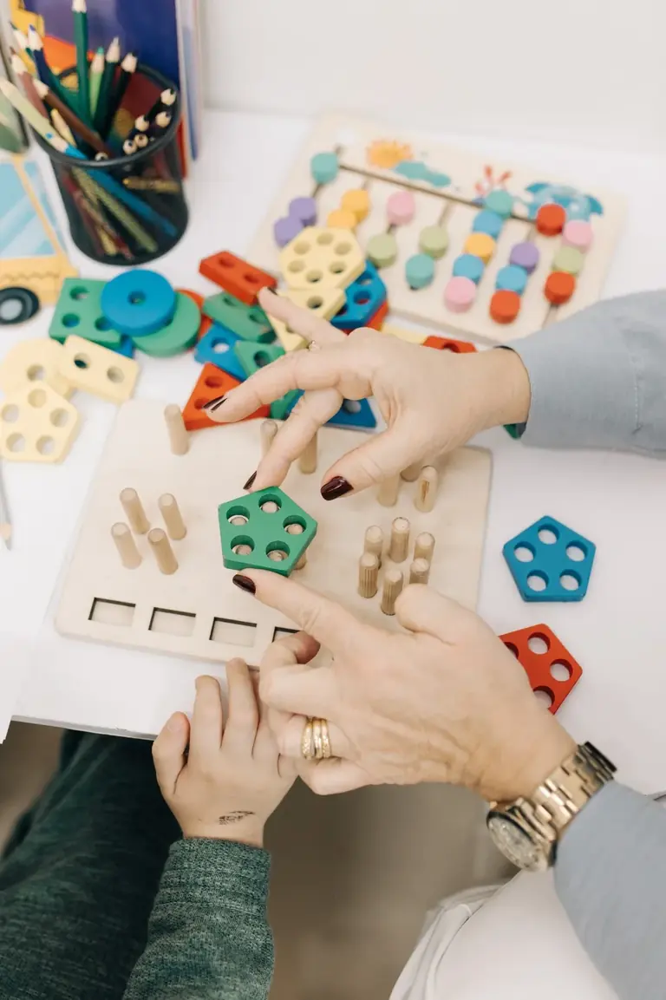
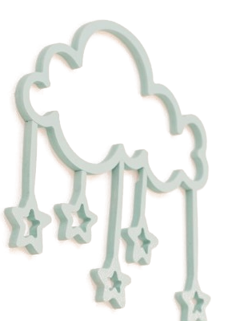
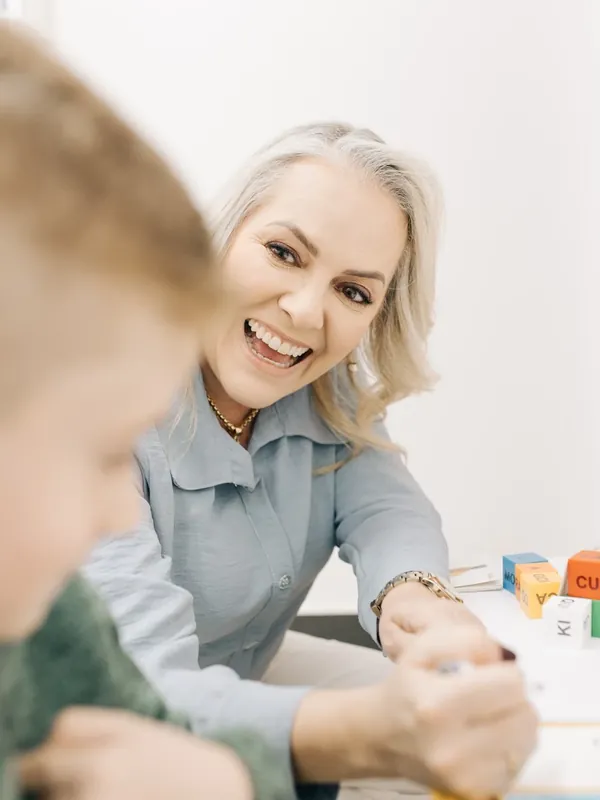
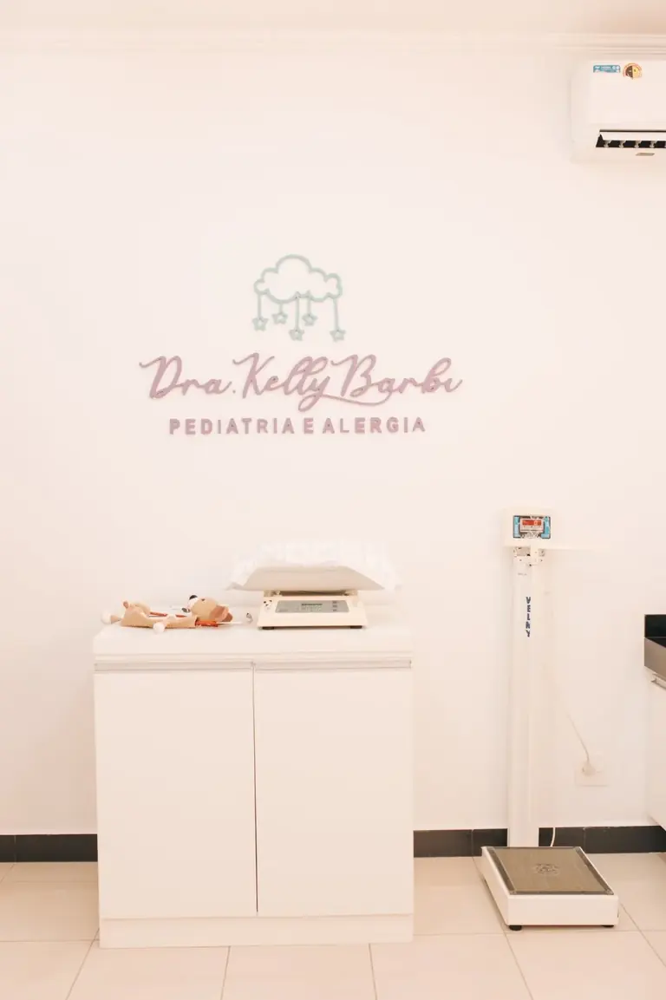

Pediatra em Mococa: cuidado atento para cada fase da infância.
Um espaço de escuta, orientação e acompanhamento pediátrico para caminhar junto com sua família — da consulta de recém-nascido e puericultura até a adolescência, com olhar dedicado à alergologia pediátrica e ao neurodesenvolvimento (TEA e TDAH).
- 5,0Nota no Google
- 76Avaliações de famílias
- InfânciaDo recém-nascido à adolescência
Puericultura e acompanhamento pediátrico do recém-nascido à adolescência.
Na consulta pediátrica em Mococa, a família encontra espaço para contar, perguntar e compreender os próximos passos do cuidado, com atenção à história, à prevenção e às necessidades individuais de cada criança.
Tirar dúvidas pelo WhatsApp
-
Escuta humanizada e investigativa
Uma conversa cuidadosa para compreender dúvidas, rotina de sono, alimentação, imunidade e desenvolvimento.
-
Da consulta de recém-nascido à adolescência
Puericultura estruturada para acompanhar ganho de peso, crescimento, vacinação e prevenção em cada fase.
-
Alergologia pediátrica e testes alérgicos
Investigação cuidadosa de rinite, asma, dermatite atópica e alergias alimentares na infância.
-
Atenção ao neurodesenvolvimento (TEA e TDAH)
Avaliação e acompanhamento pediátrico em autismo e transtornos de atenção em parceria com a família.
Alergologia, puericultura
e neurodesenvolvimento infantil.
Cada criança tem seu próprio ritmo e sua história. O atendimento começa com uma conversa aberta e uma avaliação clínica individualizada, para que responsáveis e médica possam planejar juntos os cuidados preventivos e investigativos.
1 de 5: Consulta pediátrica humanizada
Dúvidas sobre indicação ou disponibilidade? Fale diretamente com o consultório.
Conversar sobre o atendimento
O acolhimento também se sente.
Relatos compartilhados por famílias no Perfil da Empresa no Google sobre o cuidado no consultório em Mococa.
“Sempre atenta, carinhosa, pergunta todos os detalhes e tira todas as dúvidas.”
Natália Cristina Severino“Consulta tranquila, ambiente acolhedor onde a criança se sente bem e segura.”
Damaris Augusto“Nota 10. Explicação clara e objetiva para os pais.”
Djalma Toledo
Dra. Kelly Barbi
Pediatria e Alergia · Mococa
Medicina com espaço para ouvir e orientar.
Um trabalho voltado a apoiar crianças, adolescentes e famílias com investigação cuidadosa e comunicação clara.
A Dra. Kelly Barbi dos Santos Araújo atua como pediatra em Mococa, com dedicação à pediatria geral, puericultura, alergologia pediátrica e acompanhamento dos transtornos do neurodesenvolvimento infantil (TEA e TDAH).
Acompanhe conteúdos informativos sobre saúde infantil no Instagram @dra.kellybarbi.
Atendimento em Mococa e região
Para famílias que buscam uma pediatra perto de mim em Mococa-SP, o consultório está localizado no bairro Jardim Santa Maria, com estrutura preparada para receber pacientes de todos os bairros de Mococa e famílias da região que desejam acompanhamento presencial em pediatria, alergologia infantil e neurodesenvolvimento.
- Nota no Google
- 5,0
- Nota no Google
- Avaliações de famílias
- 76
- Avaliações de famílias
- Áreas de cuidado
- 4
- Áreas de cuidado
Perguntas comuns sobre a consulta pediátrica em Mococa.
Respostas diretas sobre puericultura, alergologia pediátrica, avaliação de autismo (TEA), TDAH e agendamento.
Dra. Kelly Barbi
Pediatria e Alergia · MococaNão encontrou o que procurava? Envie uma mensagem: a equipe responde pelo WhatsApp.
Conversar no WhatsApp (19) 98936-2112Quando levar o bebê ao pediatra pela primeira vez?
A primeira consulta de recém-nascido geralmente ocorre na primeira semana após a alta da maternidade, seguida de retornos regulares de puericultura. Nesse encontro em Mococa, a Dra. Kelly Barbi avalia ganho de peso, amamentação, sono, vacinas, testes de triagem neonatal e acolhe todas as dúvidas da família com tranquilidade.
Como funciona a consulta pediátrica em alergologia e investigação alérgica?
Na Consulta Pediátrica em Alergologia e Investigação Alérgica, a médica analisa detalhadamente o histórico clínico, a rotina alimentar e o ambiente da criança para investigar rinite, asma, dermatite atópica ou alergias alimentares. Quando clinicamente indicado, orienta testes alérgicos específicos e constrói um plano individualizado de prevenção e controle.
Como funciona a avaliação pediátrica para suspeita de autismo (TEA) e TDAH?
A Avaliação e Acompanhamento Pediátrico em Autismo (TEA) e TDAH envolve escuta atenta do relato familiar e escolar, além da observação cuidadosa dos marcos do neurodesenvolvimento infantil, comunicação, interação social e atenção. O acompanhamento é contínuo e integrado com terapeutas e escola, respeitando o ritmo único de cada criança.
Até qual idade a Dra. Kelly Barbi realiza o acompanhamento pediátrico?
O acompanhamento no consultório em Mococa abrange todas as fases do desenvolvimento, desde a primeira consulta de recém-nascido e lactente, passando pela infância, até a adolescência. As consultas de puericultura acompanham crescimento físico, nutrição, calendário vacinal, saúde emocional e prevenção em cada etapa da vida.
O que diferencia a Consulta Pediátrica Humanizada e Investigativa?
A Consulta Pediátrica Humanizada e Investigativa prioriza o tempo de escuta, o vínculo de confiança com a criança e a investigação cuidadosa de sintomas recorrentes, rotina de sono, alimentação e desenvolvimento. Os pais recebem explicações claras e acessíveis para participar ativamente de cada decisão sobre o cuidado infantil.
Onde fica o consultório da pediatra em Mococa e como chegar?
O consultório da Dra. Kelly Barbi está localizado na Rua Alexandre Cunali, 143, no bairro Jardim Santa Maria, em Mococa - SP (CEP 13730-270). O espaço foi planejado para acolher crianças e famílias de Mococa e região com conforto, fácil acesso e rota direta pelo Google Maps.
Como agendar uma consulta ou solicitar entrada na lista de espera?
O contato para informações sobre agendamento ou solicitação de inclusão na lista de espera é realizado diretamente com a equipe pelo WhatsApp no número (19) 98936-2112. Basta clicar nos botões de atendimento desta página para enviar uma mensagem pré-preenchida e verificar a disponibilidade de horários.
Quer saber sobre disponibilidade de atendimento?
Envie uma mensagem para a equipe pelo WhatsApp. Se desejar, peça para ser considerada na lista de espera; a equipe poderá confirmar disponibilidade e próximos passos.
O contato é feito diretamente pelo WhatsApp. Não envie informações médicas ou dados sensíveis da criança por este link.- 5,0 no Google · 76 avaliações
- Jardim Santa Maria · Mococa
- Pediatria e Alergia
Dra. Kelly Barbi
Será um prazer conversar com você.
Pediatria, Alergologia Pediátrica e Neurodesenvolvimento
